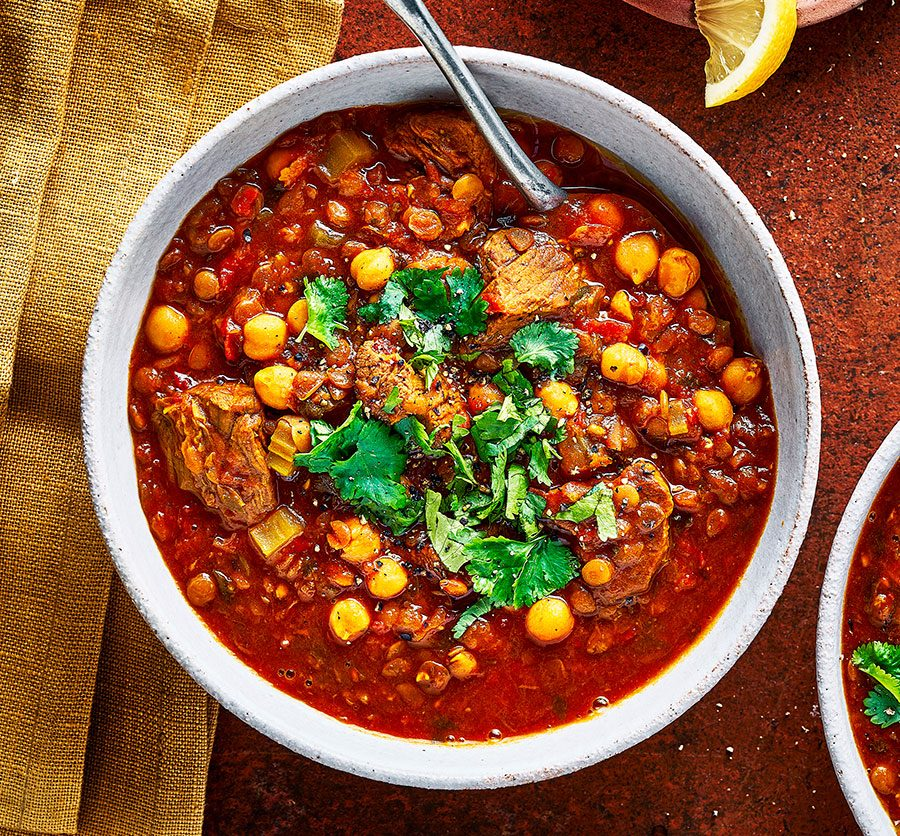

harrira soup

harrira soup the north african famous dish
Harira is a zesty, fragrant tomato-based soup with chickpeas and lentils. Robustly seasoned with ginger, pepper, cinnamon and lots of fresh herbs, it’s especially popular in Ramadan when it’s served to break the fast.
ingredients
- 8oz of lamb,beef or chicken diced
- 3 tbsp vegetable or olive oil
- several soup bones(optional)
- 2 lbs soft,ripe tomatoes
- 1 large onion grated
- 2 handfuls dry green or brown lentils
- seasonings (salt,ginger,black pepper,tumeric,ground cinnamon
steps
note:these steps are fundamental in the success of ur recipes please follow attentively
- soak the chickpeas overnight the next day drain them and peel them
- pick the lentils to get rid of any debris or stones and set them aside
- stew the tomatoes then pass them through a food mill to make a puree discard the skin and seed
- grate the onion or process it in a food processor into a thick pulp
- wash the celery and finely chop it
return to main page